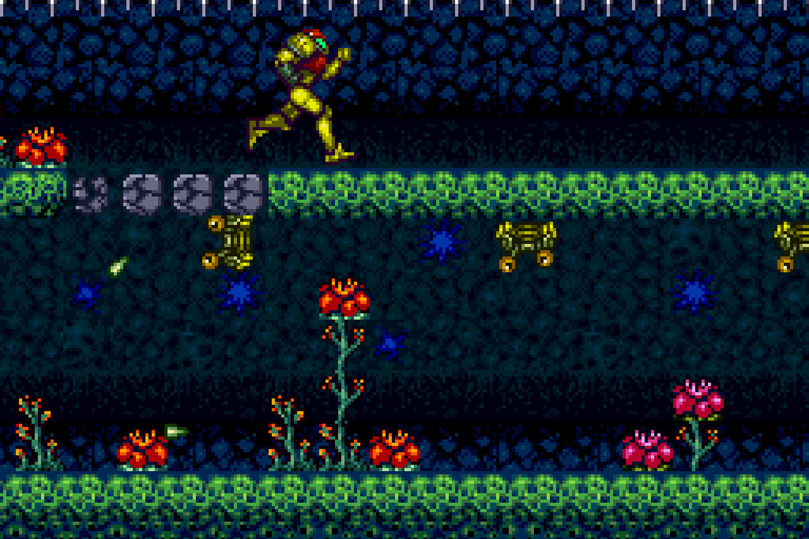
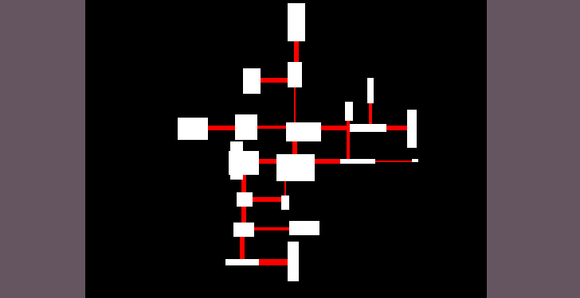
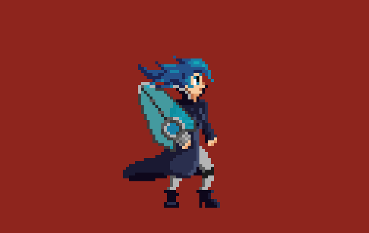

Insert log title here
Inspiration
Ascent will (hopefully) be an interesting game. I built my videogame culture around metroidvanias and I absolutely love this genre, I've played every single Metroid game and what I love the most about the series (and about the genre) is the sense of discovery they deliver to the player. It's always a great experience to explore an unknown world and open new paths that were previously unaccessable; sometimes I would love to have an infinite world to roam in.

Unfortunately, it is impossible to have such a huge map. But it is possible to give the illusion of something infinite:
procedural generation is the answer. It is also a thing that really fascinates me, I like to think of it like a computer
finally being able to make something creative, with some help from the programmer :)Super Metroid, one of the best games I've ever played
It is also a great way to improve someone's programming skills and it sometimes leads to unexpected results.

A few days ago I stumbled on this wonderful tweet
Ascent: basic structure
You've probably already guessed that Ascent will be a Metroidvania with procedurally generated elements. My plan is to use a fixed map, that I will personally design, along with a procedurally generated area (one for each hand-drawn zone). As the player completes those levels, their size and their difficulty increases, but items become rarer and so is the final rewards; secondary missions will also be set in these areas.I've already started building a level generator! At the moment it is a pretty basic tool, it just generates rooms and corridors, but, for example, doesn't handle collisions between rooms. Which may not necessarily be a bad thing, but the problem is that I have no control over this issue, which may happen when I don't want it to.

The procedurally generated areas will be accessible from the last settlements, inhabited by the last people on Earth: in these places
you will be able to purchase items that will be useful for your journey, and you will also meet new people, that may help you
in your adventure...or not :P
A simple level created by my generator
Ascent: mechanics
The game will be based on two main features: Alice's shield and hacking. With the shield, the player can both shot projectiles and defend him/herself (in Italian we don't have this distinction!). Additionally, it is possible to parry attacks and send them back to the opponent: a smart use of the shield can really make your life easier.

The second mechanic, which must be still carefully designed, is hacking. If you succeed in solving a little challenge,
you will be able to stun an enemy and, if you've been very fast or precise, you can also take control of it. That means
that you are able to use the attacks of the enemy that you're controlling: of course, the more powerful a foe is, the
more difficult the puzzle will be.Alice with her shield
Hacking will also be very useful to manipulate the environment and to get rid of obstacles that may get in your way.
Story
I don't really want to tell you anything particular about the story. I'm sadistic. Joking, I just think that it will be a better experience if you find out about the plot on your own :)All I can say is that Alice is the hero that will have to save humankind. Why? Because of a disaster. Where? Here, on Earth. When? In an unfortunately not too far future.
End of log 1
So, what do you think about my ideas? I'm very determined in implementing them, and I can't wait to make more progress in this project. I hope that you feel the same :)Feel free to tell me your opinion in the comment section! Have a nice day, see you in the next log!
05/15/2019